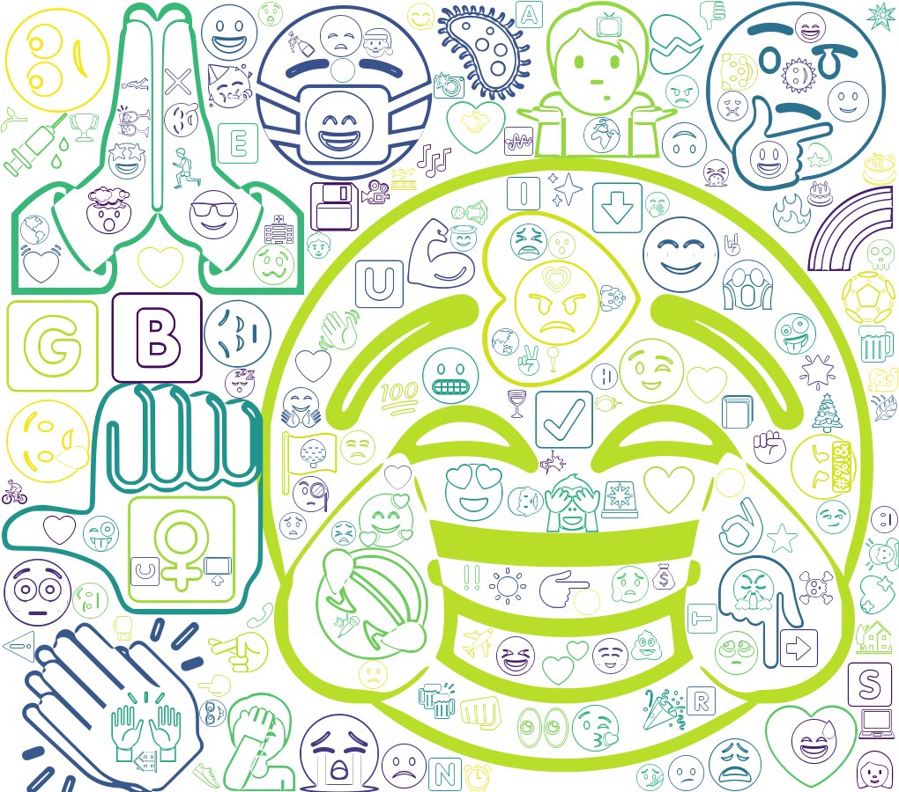
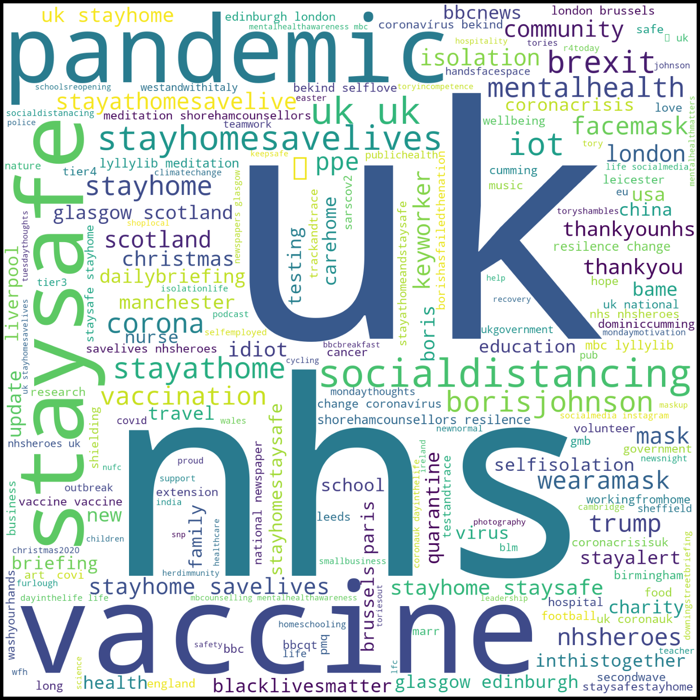

The Coronavirus (COVID-19) pandemic has been at the forefront of the global population's concerns. Twitter is one of the largest social media platforms where people express opinions on a wide range of topics. This dashboard analyses approximately 300,000 tweets posted within the United Kingdom, measuring sentiment towards COVID and lockdown over the period March 2020 to March 2021. Four sentiment analysis techniques are applied and compared: Vader, Naive Bayes, LSTM, and TextBlob. Data was collected using SNScrape, news events from the Guardian News API, and COVID statistics from Public Health England.
This dashboard analyses and compares sentiment of tweet content using four sentiment generating techniques:
This project explores how key events during the pandemic shifted public sentiment across different UK regions, analysing reactions in relation to COVID statistics and news events.

